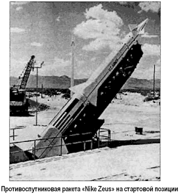
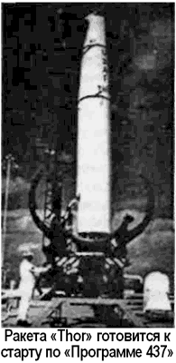

Орбитальный перехват
Страх западного мира перед первыми спутниками породил волну публикаций, в которых красочно расписывалась угроза появления на орбите советских «орбитальных боеголовок». В результате с конца 50-х годов все виды вооруженных сил США вели поисковые и экспериментальные работы в области космических перехватчиков и инспекторов.
Первые попытки уничтожения спутников предпринимались с помощью ракет, запущенных с самолета.
В сентябре 1959 года с борта самолета «В-58» стартовала ракета, целью которой был спутник «Дискаверер-5» («Discoverer 5», находился на орбите с 13 августа по 28 сентября 1959 года). Этот пуск закончился бесславно — аварией противоспутниковой ракеты. 13 октября 1959 года ракета «Балд Орион» («Bold Orion») была пущена с «В-47» и прошла в 6,4 километра от спутника «Эксплорер-6» («Explorer 6», запущен 7 августа 1959 года). Это было преподнесено как первый успешный перехват спутника.
Отношение политического руководства США к противоспутниковым системам менялось от категорического отрицания до осторожной поддержки. Так, оппозиция программе спутниковых перехватчиков была вызвана стремлением сохранить принцип «свободы космоса», который обеспечивал гарантированный доступ на орбиту разведывательным аппаратам, — появление же космических истребителей могло создать прецедент для отмены принципа «свободы космоса».
Заявления Никиты Хрущева, выдававшего желаемое за действительное, привели к тому, что к обсуждению темы ядерного оружия на околоземной орбите вновь вернулись в годы правления президента Кеннеди.
В мае 1962 года министр обороны Роберт Макнамара одобрил начало испытаний армией США трехступенчатых твердотопливных противоракет «Найк-Зевс» («Nike Zeus»), которые планировалось использовать и как противоспутниковые истребители («Программа 505»).

Для этого на противоспутниковый вариант ракеты собирались устанавливать боеголовку с термоядерным зарядом. Это, как предполагали американские военные специалисты, существенно снизит требование по точности наведения.
Испытания противоракет «Найк-Зевс», не оснащенных боевой частью, проводились сначала на ракетном полигоне Уайт-Сэндз в штате Нью-Мексико, а затем — на атолле Кваджалейн в западной части Тихого океана. Однако возможности использования «Найк-Зевс» в качестве противоспутникового перехватчика были ограничены максимальной высотой перехвата около 320 километров. 12 сентября 1962 года руководители ВВС представили на рассмотрение министру военно-воздушных сил Юджину Зукерту предварительный план использования баллистических ракет «Тор ЛВ-2Д» («Thor LV-2D») как противоспутникового перехватчика. Проект такого перехватчика разрабатывался с февраля 1962 года.
Ракета «Тор» (длина — 19,8 метра, максимальный диаметр — 2,4 метра, стартовая масса — 47 тонн) обеспечивала намного большие возможности для перехвата, чем «НайкЗевс». Снабженные ядерной головной частью ракеты планировалось разместить на острове Джонстона в Тихом океане.
Там в 1962 году был создан испытательный полигон для проведения высотных ядерных взрывов по программе «Фишбоу» («Fishbowl»).
Кубинский ракетный кризис, случившийся в октябре 1962 года, придал ощутимый толчок американской противоспутниковой программе. К февралю 1963 года разработка перехватчика «Тор», получившая название «Программа 437», за счет большей высоты действия была признана лучшей по сравнению с «Программой 505». 8 мая 1963 года президент Кеннеди утвердил «Программу 437».
Тем не менее сомнения в необходимости создания противоспутниковой программы у руководства США остались.
В конце 1963 года этой проблеме была даже посвящена специальная встреча представителей администрации. После нее работы по «Программе 437» стали идти еще быстрее. На времени создания системы сказалось и то, что большинство ее компонентов (ракета, боеголовка, стартовое оборудование) уже были созданы и испытаны.
Сами по себе технические возможности «Программы 437» были невысокими. Ракета «Тор» при пуске с острова Джонстона могла поразить спутник, находящийся от места старта на удалении 130 километров по высоте и 2780 километров по курсу. При этом стартовое окно было всего около 2 секунд. Планировалось держать в боевой готовности два «Тора»: один — основной, второй — резервный. Ракета выводила боеголовку на баллистиче скую траекторию, проходящую через точку встречи с целью.

По сигналу радиолокатора проводился подрыв ядерной боевой части — в «Программе 437» использовалась боеголовка типа «Мк49» мощностью в 1 мегатонну, имеющая радиус поражения 9 километров.
Первый испытательный пуск ракеты «Тор» по «Программе 437» состоялся ночью 14 февраля 1964 года. Макетная боеголовка прошла на расстоянии поражения от цели — корпуса ступени «Эблстар» («Ablestar») РН «Thor-Ablestar» № 281, выведшей 22 июня 1960 года на орбиту космический аппарат «Транзит2А» («Transit 2A»). Пуск был объявлен успешным.
Этими пусками завершилась первая фаза испытаний по «Программе 437», после чего ВВС приняли решение перейти ко второй фазе — приведению системы в рабочее состояние. В рамках этой фазы состоялся третий испытательный пуск. Он прошел удачно.
Учитывая успешный характер испытаний, четвертый испытательный пуск был отменен. Предназначавшуюся для него ракету «Тор» было решено использовать для учебно-боевого пуска в рамках программы обучения персонала. 29 мая 1964 года, несмотря на неудачу проведенного накануне учебно-боевого пуска, «Программа 437» была оценена как достигшая начальной оперативной готовности с одной ракетой «Тор» на боевом дежурстве. 10 июня, когда второй «Тор» был поставлен на боевое дежурство, противоспутниковую систему объявили полностью работоспособной. А 20 сентября 1964 года президент Линдон Джонсон в ходе предвыборного выступления публично сообщил о существовании противоспутниковых систем «Найк-Зевс» и «Тор».
Хотя «Программа 437» достигла своей цели, последующие события ограничили ее полноценное использование. Первоначальный план предусматривал формирование в рамках «Программы 437» трех подразделений (Combat Crews А, В и С), каждое из которых должно было проводить один учебно-боевой пуск в год. Однако еще в декабре 1963 года министерство обороны сообщило ВВС, что количество ракет «Тор», которые предполагалось передать «Программе 437», сокращено с 16 до 8. В связи с тем, что две ракеты необходимо было держать на острове Джонстона на боевом дежурстве и две в арсенале на авиабазе Ванденберг, для учебно-боевых пусков оставалось лишь четыре «Тора» до начала 1967 финансового года, когда можно было заказать новые ракеты. Поэтому в 1964–1965 годы состоялось лишь по одному учебному пуску, а последующий был выполнен только два года спустя.
Свертывание «Программы 437» началось в 1969 году.
После подписания «Договора о принципах деятельности государств по исследованию и использованию космического пространства, включая Луну и другие небесные тела» угроза ядерных ударов из космоса перестала казаться столь острой.
К тому же шла война во Вьетнаме, и бюджетных средств, выделенных министерству обороны, не хватало на подобные экзотические программы.
В итоге начались сокращения персонала, приписанного к проекту; ядерные боеголовки сняли со стоявших на боевом дежурстве ракет и поместили в хранилище. В конце 1969 года министерство обороны заявило, что система будет полностью свернута к концу 1973 финансового года. 4 мая 1970 года заместитель министра обороны Дэвид Паккард направил ВВС распоряжение ускорить фазу перевода «Программы 437» в резерв и завершить ее к концу текущего финансового года. Ракеты «Тор», находившиеся в состоянии 24-часовой готовности к пуску, и хранившиеся отдельно боеголовки были вывезены с острова Джонстона, а наземные средства полигона отключены. Теперь для перевода «Программы 437» в оперативную готовность потребовалось бы 30 суток.
Завершающую точку в истории «Программы 437» поставил ураган Селеста, прошедший через Джонстон 19 августа 1972 году. Сильный ветер и потоки воды обрушились на остров и повредили компьютеры и другие средства противоспутниковой системы на полигоне. Основные повреждения были исправлены лишь к сентябрю. Систему попытались перевести в боевое состояние, но в декабре вновь сняли с боевого дежурства для полного восстановления всего оборудования. Лишь 20 марта 1973 года были исправлены все повреждения и программа возвращена в состояние резерва с 30-дневной боеготовностью.
Хотя практическая способность «Программы 437» для уничтожения советского орбитального оружия была теперь минимальна, она все еще оставалась единственной американской противоспутниковой системой. По этой причине ее продолжали поддерживать. Однако очевидные недостатки системы предопределили ее закрытие. Таких недостатков «Программы 437» называлось как минимум три.
Во-первых, при ядерном взрыве в космосе за счет захвата продуктов взрыва магнитным полем Земли возникали искусственные радиационные пояса интенсивностью, в 1 001 000 раз выше обычного фона. Это подтвердили космические ядерные взрывы, проведенные в августе 1958 года в рамках операции «Аргус» («Argus»). Искусственные радиационные пояса выводили из строя как космические аппараты противника, так и свои.
Во-вторых, система имела весьма низкую оперативность, так как необходимо было дождаться, когда трасса цели пройдет вблизи точки старта ракет.
В-третьих, в случае начала боевых действий в космосе потребовалось бы большое количество пусковых установок «Тор» для одновременного уничтожения большого числа спутников противника, а развернуть их в короткий срок не представлялось возможным. 10 августа 1974 года Управление «Программы 437» издало директиву о свертывании объектов противоспутниковой системы на острове Джонстона. 1 апреля 1975 года министерство обороны официально закрыло «Программу 437»…
Учитывая выявленные недостатки системы орбитального перехвата с использованием ядерного оружия, в начале 70-х годов ВВС стали разрабатывать новый противоспутниковый проект. Он была рассчитана на поражение цели не ядерной боевой частью, а за счет прямого попадания противоспутниковой ракеты во вражеский космический аппарат. Оперативность же ее использования достигалась за счет самолетного базирования. Но об этом я расскажу ниже.